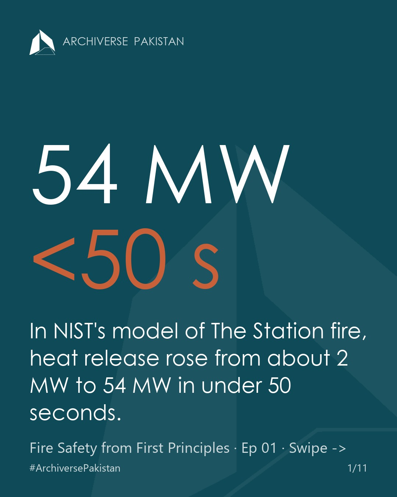
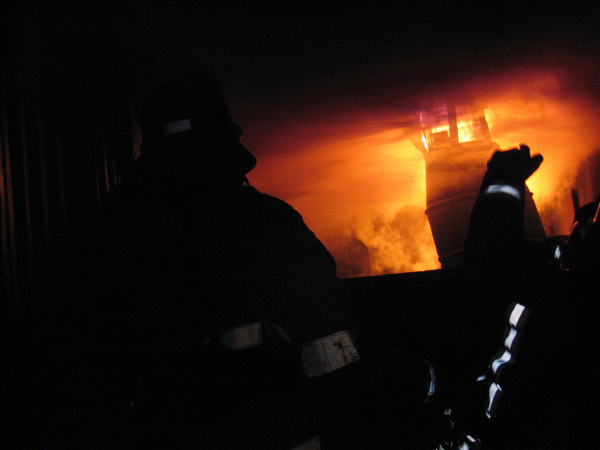
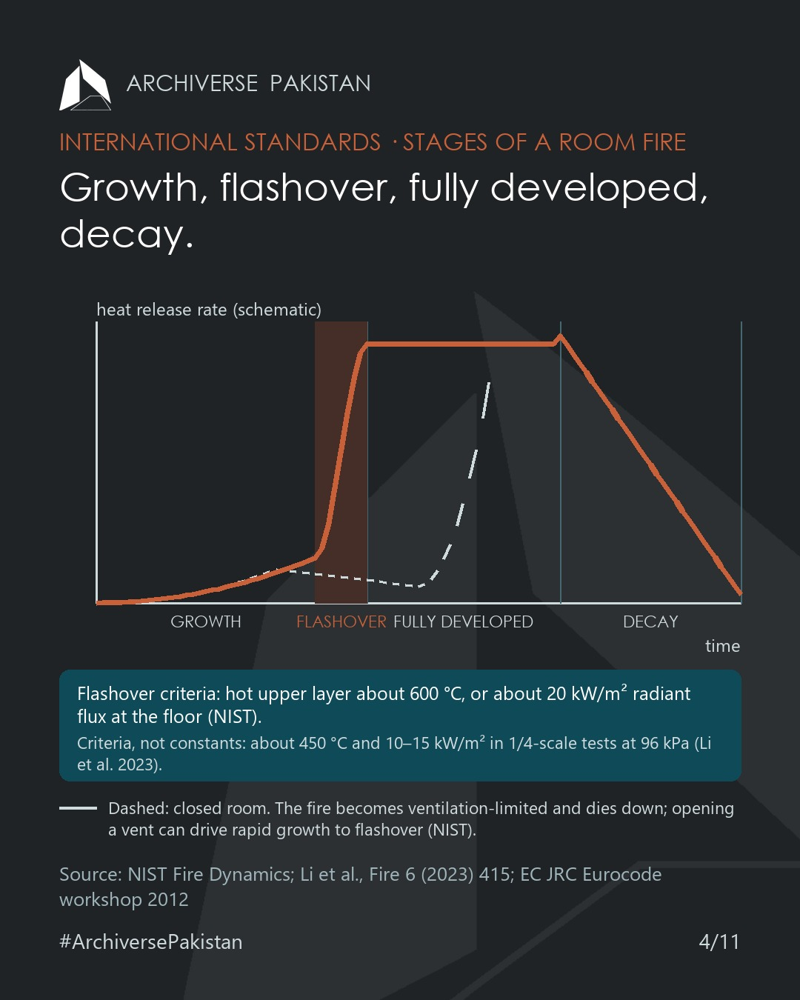
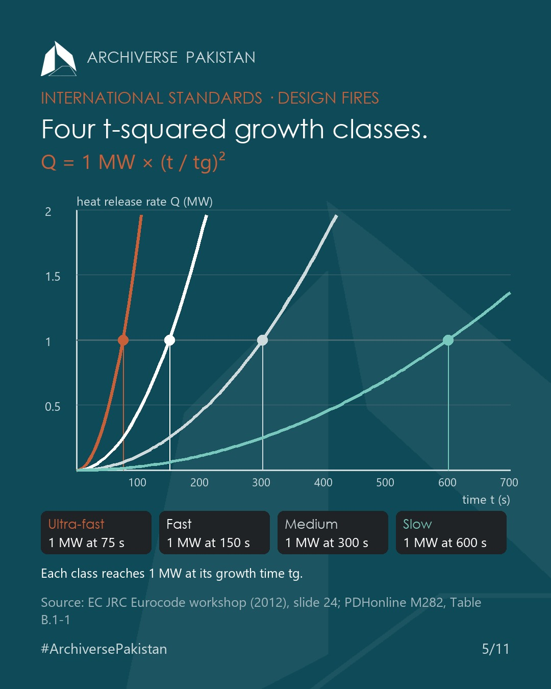

Fire behaviour: heat release rate, flashover, fire load and smoke

1. The question
In NIST's computer simulation of The Station nightclub fire (West Warwick, Rhode Island, 20 February 2003), once the drummer's alcove became fully involved, at about 50 to 60 seconds, the heat release rate rose from about 2 MW to 54 MW in under 50 seconds: more than 1 MW per second. As the fire spread and became oxygen-limited, it held at about 45 MW for about 150 seconds.
What kind of physics produces that, and what does a designer need to carry into a fire strategy? This episode builds it from first principles.

2. The canvas
a) What fire needs. The fire tetrahedron: fuel, heat, an oxidizer and an uninhibited chemical chain reaction (NIST glossary, citing NFPA 921:2017). Remove one and combustion stops. Our note: this is why suppression methods differ (cooling, inerting, fuel control, chemical inhibition); Episode 15 sources them in full.
b) The stages of a compartment fire. NIST describes:
- Growth: early in the growth stage there is adequate oxygen for flaming combustion.
- Flashover: "the transition phase in the development of a contained fire", and "the most dangerous stage of fire development".
- Fully developed: all of the available fuel is burning.
- Decay: as the fuel burns away, the energy level falls.
The European Commission's Eurocode workshop material shows the same curve as a growth phase, a stationary (fully developed) phase and a decay phase.
c) Fuel-limited and ventilation-limited. In a closed compartment the fire can use up its oxygen, become ventilation-limited and die down. When a vent opens, oxygen is introduced, and NIST notes this "can result in a rapid increase in fire growth potentially leading to a flashover". Our view: window size and door position change the fire, not only the escape.
d) The two quantities a designer needs. Heat release rate (HRR, in kW or MW) is the size of the fire at a moment: it drives flame height, smoke production, the hot-layer temperature and whether flashover happens. Fire load density (MJ/m²) is the energy available to burn per m² of floor, which sets how long a fully developed fire can last.
e) Smoke. Smoke inhalation, rather than burns, is the major cause of death in fires (Eggert and Huss, 2017, a peer-reviewed narrative review).

3. International standards and codes
Flashover criteria. NIST lists a threshold flux to the floor of 20 kW/m² at flashover and fire gases in excess of 600 °C. Li, Chen, Zhao and Wang (Fire 6, 2023, 415) report these as the generally agreed criteria (upper-layer temperature above 600 °C, floor heat flux above 20 kW/m²). They are criteria, not constants: in Li et al.'s experiments in a 1/4-scale aircraft cargo compartment, flashover onset came at an average upper-layer temperature of about 450 °C and a floor flux of about 10–15 kW/m² at 96 kPa (about 550 °C at 60 kPa).
Design fires: t² growth. For flaming, spreading fires, HRR grows roughly with the square of time:
Q = 1 MW × (t / t_g)²
where t_g is the time to reach 1 MW. The four classes:
| Class | t_g (time to 1 MW) |
|---|---|
| Ultra-fast | 75 s |
| Fast | 150 s |
| Medium | 300 s |
| Slow | 600 s |
Sources: European Commission JRC, Eurocode workshop slides (Brussels, 2012), slide 24; PDHonline M282 Fire Protection Fundamentals, Table B.1-1.

Fire load: EN 1991-1-2:2002, Annex E. Eurocode 1, Actions on structures exposed to fire, informative Annex E, gives characteristic fire load densities q_f,k per m² of floor area (80% fractile):
| Occupancy | q_f,k (MJ/m²) |
|---|---|
| Library | 1,824 |
| Dwelling | 948 |
| Shopping centre | 730 |
| Office | 511 |
| Hotel (room) | 377 |
| Theatre / cinema | 365 |
| School classroom | 347 |
| Hospital (room) | 280 |
| Transport (public space) | 122 |
The design value is q_f,d = q_f,k · m · δq1 · δq2 · δn, where m = 0.8 for mainly cellulosic materials, δq1 and δq2 account for compartment size and occupancy (fire activation risk), and δn for active measures. An automatic water extinguishing system gives δn1 = 0.61. (Sources: JRC workshop slides 22–23; NBN/CSTC, Fiche Eurocode EN 1991-1-2, 2008.) Episode 02 develops this link between active and passive protection.
Reference texts. SFPE Handbook of Fire Protection Engineering, 5th ed. (Springer/SFPE, 2016, three volumes). In the UK fire-engineering series, PD 7974-1:2019 covers the initiation and development of fire within the enclosure of origin.
4. Best practice
NIST's investigation of The Station (NCSTAR 2, 2005) is the reference full-scale case for growth, flashover and tenability in an assembly building. NIST rebuilt the platform area, with flexible polyurethane foam on the walls, in its large fire laboratory:
- Unsprinklered: flashover had occurred in the alcove by 60 seconds; the measured peak heat release was 4.3 MW, with a steady 3.4 MW after about 150 seconds; conditions at head height (1.5 m), 5.5 m from the fire, were lethal in under 90 seconds; hydrogen cyanide was among the measured gases.
- Sprinklered to NFPA 13: the sprinklers suppressed the fire after 25 seconds. Both the experiment and the computer model showed that sprinklers would prevent flashover.
- What followed: NIST recommended that model codes require NFPA 13 sprinklers in all new nightclubs regardless of size, and in existing nightclubs with an occupancy limit above 100 people.
Why smoke sets the clock. The Station measurements show tenability (temperature, visibility, toxic gas) lost at head height in under 90 seconds; Eggert and Huss find smoke inhalation, rather than burns, the major cause of fire deaths. Our view: the egress clock is set by smoke, long before the structure is at risk.
5. Pakistan today
The Building Code of Pakistan – Fire Safety Provisions 2016 (PEC, S.R.O. 1073(I)/2016, based on NFPA 1 Fire Code 2015) already carries the vocabulary of performance-based fire engineering:
| Clause | Text |
|---|---|
| §3.4.6 | Fire model: mathematical prediction of fire growth, environmental conditions and effects, from conservation equations or empirical data |
| §3.4.7, §3.4.7.1 | Fire scenario; design fire scenario: a fire scenario selected for evaluation of a proposed design |
| §3.4.8 | Fuel load: the total quantity of combustible contents of a building, space or fire area |
| §3.4.9, §3.4.12 | Incapacitation; performance criteria (threshold values based on quantified performance objectives) |
| §1.1.1(10) | Scope includes interior finish, decorations and furnishings that contribute to fire spread, fire load and smoke production |
| §13.2.1.2 | Nonmetallic rubbish containers over 0.15 m³ (40 gal): peak rate of heat release no more than 300 kW/m² at a flux of 50 kW/m², labelled on the container |
The concepts are in the code. Episodes 17–19 will report, from confirmed sources only, how they are used in design, approvals and the products market.
6. Our suggestion: a proposal for discussion
State the design fire on every fire strategy that relies on smoke control or a performance-based argument.
Logic, in three steps:
- §3.4 already defines the design fire scenario and fuel load.
- Smoke control capacity, detector response and available escape time all depend on the growth rate and peak HRR assumed.
- Writing them on the strategy (growth class, peak HRR or fire load density, and the data source) makes the assumption visible to the checker and the owner.
Precedent: EN 1991-1-2 Annex E publishes fire load densities and the active-measure factors as design inputs; BS 7974:2019 sets performance criteria in its qualitative design review before any analysis.
Assumptions: designers can access the data; checkers are trained to read it.
Limits, and what to test first: the Eurocode values are European 80% fractiles. Pakistani offices, shops and homes may carry different fire loads, so the first test is a fire-load survey of Pakistani occupancies, which universities can run as student research.
Who does what:
- Schools (PCATP and HEC accreditation): teach compartment fire dynamics (HRR, t² growth, flashover criteria, fire load density, tenability) as examinable content in building-technology and services courses.
- Designers: state the design fire in every strategy that uses smoke control or a performance route.
- PEC (S30 Code Fix episode 01): where §1.4 alternatives or §3.4 performance terms are used, ask for the design fire scenario and its source data with the submission.
7. Your suggestion
An office floor at 511 MJ/m² and a shopping floor at 730 MJ/m²: which would you sprinkler first, and why: fire load, growth rate or the number of occupants? And which design fire (class and peak HRR) would you state for a Pakistani shop floor? Tell us in the comments; with your permission, the best proposals feed the Season 1 checklist.
PEC, PCATP and HEC: we invite you to share your plans for fire engineering in the code and the curriculum. We will publish your replies.
Next — Episode 02: passive vs active protection, and the fire strategy as a design document.
Sources
- PEC, Building Code of Pakistan – Fire Safety Provisions 2016 — https://www.pec.org.pk/wp-content/uploads/2021/05/Building-Code-of-Pakistan-Fire-Safety-Provisions-2016.pdf
- NIST glossary, "Fire tetrahedron" (citing NFPA 921:2017) — https://www.nist.gov/glossary-term/23921
- NIST, "Fire Dynamics" — https://www.nist.gov/el/fire-research-division-73300/firegov-fire-service/fire-dynamics
- Li M., Chen Y., Zhao Y., Wang J., Fire 6 (2023) 415, doi:10.3390/fire6110415
- Vassart O. et al., "Eurocode 1 Part 1-2: fire actions", European Commission JRC workshop, Brussels, 27–28 Nov 2012 — https://eurocodes.jrc.ec.europa.eu/sites/default/files/2022-06/03a-VASSART-EC-FireDesign-WS.pdf
- PDHonline M282, Fire Protection Fundamentals, Appendix B, Table B.1-1 — https://pdhonline.com/courses/m282/FireProtectionFundamentals.pdf
- NBN / CSTC, Fiche Eurocode EN 1991-1-2, Sept. 2008 — https://www.buildwise.be/media/tu1nx4jm/nbn-en-1991-1-2.pdf
- NIST NCSTAR 2, Vol. 1 (2005) — https://nvlpubs.nist.gov/nistpubs/Legacy/NCSTAR/ncstar2v1.pdf
- Eggert E., Huss F., Scars, Burns & Healing 3 (2017) — https://pmc.ncbi.nlm.nih.gov/articles/PMC5965309
- SFPE Handbook, 5th ed. — https://sfpe.connectedcommunity.org/publications/handbooks/sfpehandbook
- BSI Knowledge, PD 7974 series — https://knowledge.bsigroup.com/articles/whats-new-in-the-application-of-fire-safety-engineering-principles